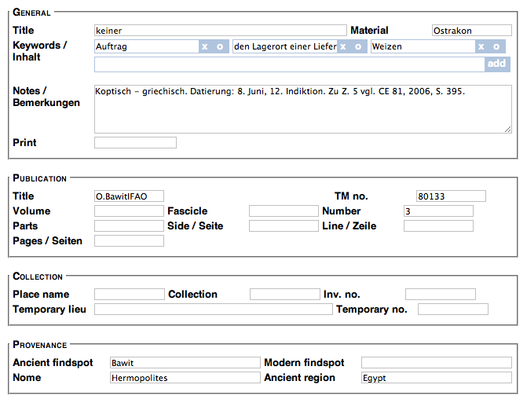

The Son of Suda On-Line
Ryan Baumann
Introduction
Integrating Digital Papyrology (IDP) is a multi-institutional project aimed at establishing and improving relationships between three digital papyrological resources: the Duke Databank of Documentary Papyri (DDbDP), the Heidelberger Gesamtverzeichnis der griechischen Papyrusurkunden Ägyptens (HGV), and the Advanced Papyrological Information System (APIS). Started in 1983, the DDbDP collects a number of digital transcriptions of ancient documentary papyri from print editions. HGV and APIS, meanwhile, collect metadata (place of origin, date, keywords, bibliography, etc.) and images of much of the same material. A unification of these data sources would allow linking the digital transcriptions of texts with the images, dates, and other metadata, and in 2007 the Andrew W. Mellon Foundation funded a project, “Integrating Digital Papyrology,” to begin this process. Over the years the DDbDP has undergone a number of transitions, and this project also supported its transition from an idiosyncratic SGML encoding to standards-based EpiDoc XML markup.1 In addition the grant provided funding to improve and finish the first generation of a tool for searching and browsing the unified collection of materials, called the Papyrological Navigator (or PN). At the conclusion of the IDP grant, Mellon funded a second phase of the project (called IDP2) with the following goals:
- Improve operability of the PN search interface on the merged and mapped data from the DDbDP, HGV, and APIS.
- Facilitate third-party use of the data and tools.
- Create a version controlled, transparent and fully audited, multi-author, web-based, real-time, tagless, editing environment, which — in tandem with a new editorial infrastructure — will allow the entire community of papyrologists to take control of the process of populating these communal assets with data.
The environment described in the last item, inspired by the Suda On-Line,2 was named the Son of Suda On-Line (SoSOL). Though it takes its name and inspiration from SOL, SoSOL was written from the ground up to incorporate new technologies, address project-specific problems, and move toward more open data and tooling [Elliott, 2008,Sosin, 2010]. This article aims at not only a description of the resulting software, but also of the challenges encountered and solutions chosen in its formulation, to encourage broader adoption or discussion of both.
The Son of Suda On-Line
Though collaborative online editing environments such as Wikipedia have the advantage of allowing anyone to contribute, many question the scholarly integrity of resources which can be edited by anyone unvetted. The Suda On-Line, which actually predated the existence of Wikipedia by two years, addressed this problem by marking submitted translations with their level of editorial vetting [Finkel et al., 2000]. This combination of openness to contribution with strong editorial control was the guiding principle in the design of the Son of Suda On-Line.
However, even more than SOL, the papyrological projects encompassed in Integrating Digital Papyrology value the scholarly integrity of data published under their aegis. Thus, SoSOL attempts to digitally replicate the scholarly mechanisms of peer review these projects would normally enforce. This results in somewhat of an inversion of where and how editorial control is exerted in comparison with SOL. While SOL users are authorized by editors during registration and are assigned work or must request a specific entry [Mahoney, 2009], in SoSOL users are not screened and at present work on whatever they feel needs emendation or inclusion in the corpus. However, this distinction in the assignment of work may just arise naturally from the differing natures of the texts involved; whereas the Suda—while large—is a bounded unit of work, the papyri do not yet show signs of halting their expanding numbers in transcriptions and publications.
Standing in starker contrast is how submissions which have not received editorial oversight are handled: in SOL, they are immediately publicly searchable and accessible but marked as “draft”; in SoSOL, submissions undergo review and voting by an editorial board before publication as “canonical” and being made available for searching in the Papyrological Navigator. This may seem restrictive, or even contradictory to claims of openness. It is indeed the former, but only inasmuch as the editorial boards are controlling the quality of what they are willing to put their names to in the tradition of peer review. The latter requires some discussion.
Data and Openness
“We no longer see IDP as representing at any given moment a synthesis of fixed data sources directed by a central management; rather, we see it as a constantly changing set of fully open data sources governed by the scholarly community and maintained by all active scholars who care to participate. One might go so far as to say that we see this nexus of papyrological resources as ceasing to be “projects” and turning instead into a community.”
What do we mean here by “fully open”?
On one level, it is the terms under which data is published.
Though asserting any sort of copyright on the 2,000-year-old texts themselves is perhaps nonsensical (at least in the US3), the complete set of IDP XML files are published with a Creative Commons Attribution 3.0 License,4 explicitly permitting the typical varieties of scholarly reuse and citation anticipated for the data, in line with other recent calls for open access in the humanities [Crane, 2010]. (Atypical and unanticipated forms of reuse would be even more exciting.)
On another level, it is the manner in which data is published. For collaborative online projects, this is usually a challenge. If the data is constantly changing, how do you publish it in any traditional sense? Perhaps even more challenging is this: how do you publish the changes themselves, both retroactively and proactively?
By retroactively, we mean that the revision history of the data up to the present may itself be important; by proactively we mean that if a user has already obtained the complete revision history at some point in time, it is better to allow them to simply download the changes since that point. Many online collaborative environments, such as MediaWiki and the original SOL, store all changes in a database system. This usually makes distribution of the complete revision history, particularly proactive distribution, extremely difficult. As an example, the English-language Wikipedia was unable to distribute its complete dataset for several years, and was only most recently able to dump its revision history in January 2010, with no successful exports since.5 Even if they were able to do so, the only mechanism for updating such a data dump is to download the entire several-hundred-gigabyte file each time.
Next-Generation Version Control
We felt that the best way to approach this problem was to use a Revision Control System as the backend for the data itself, instead of a traditional database. Though there are many well-established centralized systems such as CVS and Subversion,6 in recent years there has been an explosion in the popularity of distributed version control systems (DVCSs). Typically this means there is no “central” server except by social convention; all copies of the repository are in a sense equal and can share changes with one another. This allows for a variety of workflow styles, and has a number of other important impacts.
One of the most popular distributed version control systems is Git, initially developed by Linus Torvalds for managing the Linux kernel software project. Due to its broad acceptance, design choices, and proven performance on a number of large projects, it is the backend we selected for data in SoSOL. The SoSOL codebase itself was also managed with Git from the beginning, and is available online.7
As a result of using a DVCS for the data backend, it is possible to use Git not only to retrieve both the complete revision history of the IDP data as managed by SoSOL8 (retroactive publication), but also to easily update your copy of the repository as changes are published (proactive publication). Due to the distributed nature of Git, the concepts of branching development and merging changes have been integrated into its design, making it easy to keep your copy of the data up-to-date even if you have made your own modifications. (After all, if anyone can pull changes from any other copy of the repository, merging needs to be fast and easy.) The long-running version of this behavior of splitting off your own modifications is known in the open source world as “forking”. Git reduces the overhead of both forking a project, as well as of contributing your forked changes back.
That a DVCS makes these things trivial also represents a significant decision in the design of SoSOL: for the “canonical” data repository it interacts with, it does not need to care about any external mechanisms or workflows used to introduce changes. SoSOL only needs to keep track of changes within its domain; it is merely a front-end and social infrastructure for easing and managing contributions. When a user edits data in SoSOL, it is forked from the main repository to allow them to do their work without interruption. They then submit their changes for editorial review, and when they pass muster they are merged back into the canonical repository. However, the repository may be updated by any external process in the interim, typically without drastically impacting the work that must be done to perform the merge.
Thus, the fact that IDP now uses Git for its public data repository, in combination with the license the data is distributed under, represents the complete realization of “a constantly changing set of fully open data sources governed by the scholarly community and maintained by all active scholars who care to participate” [Bagnall, 2010]. For us, “participate” in fact has two senses: participating within our system (that is, participating in our editorial review process), or participating in any enterprise you choose with the complete dataset which we make freely available.
Implementation
The Son of Suda On-Line environment itself is written in Ruby using the popular Rails web framework9. Instead of the mainline Ruby interpreter written in C (usually referred to as Matz's Ruby Interpreter, or MRI, after the language's creator), we use a Java implementation called JRuby. Though this was initially done to enable deployment of SoSOL in any Java Servlet Container such as Tomcat, SoSOL has come to use a number of Java libraries (particularly for interacting with XML data), facilitated by JRuby's tight Java integration.
Git Internals
Some discussion of how Git works and internally represents version history is perhaps necessary to illustrate how its design enables and informs other design decisions in SoSOL. In Git, the version history of a project is encoded as a directed graph of three kinds of internal objects, all of which are identified by the unique SHA-1 hash of the object's content.10 These objects form the “nodes” in Git's graph, while their contents contain the directional arrows linking them together.
The simplest instance of version history (in Git, and conceptually) is a single piece of content with one version. Bare content is the “blob” object in Git, and has no additional metadata associated with it — these can be thought of as leaf nodes in the graph (that is, nodes which do not point to other nodes).
However, having just one file is not very useful for most projects. Git organizes and collects multiple blob objects into a file structure using tree objects. These tree objects are simple plaintext files which list identifying hashes with their filenames. Each tree object represents a single directory; for subdirectories, trees can point to other tree objects in addition to blobs, as in Figure 1a.
Revisions in Git are stored as commit objects. These point to a single tree, and contain metadata about the commit (such as author, time, commit message) as well as pointers to one or more parent commit objects. Thus, a simple merge would have two parent commits, while a branch or fork would be two different commits pointing to the same commit. The fact that all of this history is stored as a connected graph is what allows the Git system itself to examine things such as where a fork occurred when attempting to merge concurrent changes, and intelligently make the right decision based on the chosen merge strategy.
Let's walk through a simple linear commit history to illustrate things, winding up with the graph shown in Figure 1b:

(a) A tree graph in Git
(b) A series of commits in Git
Figure 1: Visualizations of Git's internal graph structure. Red squares are blobs, blue are trees, green are commits. Text in the top-left corner is the object's truncated hash.
- We start our project with just a README file containing the string “text”. Since we want to record this momentous occasion, we commit the state of our repository with the commit message “first commit”. This commit points to the hash of the tree, which contains the hash of our README.
- Since this project is sure to be our magnum opus, we quickly decide we want to immortalize contributors by crediting them in an AUTHORS file. We write this out and hastily make a new commit to add it. Since the README is unchanged, the same object from before is reused. However, because we have added a new file, the tree has changed, so a new tree object is made for the commit to point to.
- Later, the mood strikes us to update the README so we do so and make a new commit. Again, a new blob object is constructed for the new content, although this time the AUTHORS blob is able to be reused because we didn't modify it. Because changing the README changes the blob object's hash, the tree object must store the new hash and receive a new hash itself.
Though there are many other facets and features, this is the core of Git.
The consequence of all objects being identified by a unique hash of their contents means these objects can easily be shared between copies of the repository — knowing both that there won't be conflicts between objects with different content having the same hash, and that the same object will have the same hash no matter where it is. Since all links between objects are part of the hashed content, any change in the graph would result in a cascade of changing hashes (as in step three of our example). Because Git verifies and uses these hashes for its own operation, the integrity of the repository is incredibly robust; if you have a copy of the repository, and someone tries to rewrite history by removing or altering an object which is already referenced, you will notice when you try to pull their changes because all descendant objects will have different hashes from yours. If an object file is corrupted, it can easily be restored from any copy of the repository; likewise, any copy of the repository is a complete copy of the repository.
Data Sources, Publications, and Workflow
As outlined in the introduction, IDP represents the synthesis of a variety of papyrological projects managed by different institutions. This has informed SoSOL's design in how it interacts with and models these disparate data sources.
Because these papyrological resources evolved separately, the concept of a “publication” and what defines an object or text may in some cases be slightly different. As an example, two distinct hands may have written two different texts on a single piece of papyrus; HGV keeps two metadata records, while the DDbDP keeps a single transcription (but still indicating the distinct hands inside it). These relationships can become quite complicated, with things such as reprints of texts, or ancient military receipt records containing hundreds of texts. In addition, the data itself is different enough that different methods may be preferable for editing or interacting with data from a given resource. Although IDP has standardized on EpiDoc XML encoding, it still collects a variety of different kinds of information about papyri, including transcriptions, translations, and complex metadata.
SoSOL deals with this internally by representing each “publication” as a collection of one or more resources, which we call “identifiers”. Because there are a variety of types of resources, we use an identifier base class which implements common methods for all types of resources (such as getting or setting the identifier's content in the Git repository), while using subclasses of this to implement behavior specific to a given type of resource. Each identifier is actually called such because it is named with a string which it is assumed corresponds to exactly one resource — for example, HGV's or DDbDP's name for an object. Because these resources are stored as separate XML files with their own particular directory structure, each type of identifier has its own method for turning its name into a file path.
SoSOL uses the “publication” as the unit of work for the editorial workflow — each publication corresponds to a development branch in the Git backend. When the identifiers belonging to a publication have been modified, it can be submitted to the editorial boards for review. Because we have had to deal with disparate types of resources from the beginning, the review process is able to have different editorial boards for each type of identifier. Currently this is implemented as a sequential workflow; if a user submits a publication with changes to HGV metadata, DDbDP transcription, and HGV translation, it will be reviewed in that order, requiring approval from each board before going to the next. Each editorial board has their own membership and voting rules. If a submission is rejected, the user is able to see the reasons given during voting and revise and resubmit their work. Users can also see a list of other users working on the same “publication” as well as their contact info. If they desire to coordinate amongst themselves, they can share links to their publications which are viewable (but not editable) by any logged in user who knows the link.
Figure 2: A user's dashboard in SoSOL, with publications being worked on
Because of Git's design, SoSOL is actually able to maintain a separate Git repository for each user and editorial board in its backend. Despite the fact that IDP's canonical data repository is around 1GB in size, each copy can be on the order of kilobytes because it can simply reference objects already stored in the repository it's been forked from. This means that when a user begins editing a publication, the branch for that publication is made on their copy of the repository, and only new objects which they create in the course of making updates must be stored in it. When they submit the publication, this branch and its related objects are copied to the board's repository, and when they approve the publication they then merge this branch back into the canonical data repository. Eventually, this design could be integrated with a Git server (in the style of GitHub11), allowing each user to have direct access to their own Git repository to easily make changes using any process they choose before submission.
Another advantage of Git's design is that accurate, transparent attribution is easily maintained in the history of each piece of data. Interventions made by the editorial board after submission are preserved as being authored by them rather than by the submitter. Because Git allows a distinction between “author” (who wrote a commit) and “committer” (who put a given commit in the repository), we can record which editor made the merge to the canonical repository without losing information about who actually authored the underlying changes. We also record the members of the editorial board at the time a submission is accepted, by adding that they've signed off to the commit message. All of this is done as part of a process we call “finalization” — after a board approves something, it is assigned to a random member of the board to undergo any final revisions and manual oversight of the merge into the canonical repository. As part of this, we flatten multiple commits made before submission into a single commit (as each time the user saves it introduces a commit, which was deemed more revision granularity than necessary for our use) which is rewritten to have the content of any individual commit messages as well as the submission reason and editorial sign-off messages.
Figure 3: Software components and data flow at the conclusion of IDP2
The advantage of all this is that the core design of SoSOL deals mainly with this identifier/publication model, and providing functionality for using this abstraction to have an editorial workflow on top of a Git repository. The goal was to make these core components reusable, while providing your own implementations for how your own identifiers are edited and aggregated into publications. One can imagine the simplest implementation as being an identifier whose name is the file path, which just presents the plaintext contents of the file for editing, and which has no relationships with other identifiers so that each publication is a single identifier.
Under IDP2, SoSOL manages the complex relationships between identifiers by interfacing with a piece of software developed for the project which we call the Numbers Server. This is implemented as an RDF triplestore12
which is built up by processing the entire canonical IDP dataset and looking for associations between resources. SoSOL can then simply query any single identifier in the Numbers Server to find all other identifiers related to it in order to aggregate them into a logical publication. The relationships and data flow between SoSOL, the Papyrological Navigator, and the Numbers Server are illustrated in Figure 3.
Alternative Syntax for XML Editing
One of the proposed items for the SoSOL environment was to provide a “tagless” editing environment for the EpiDoc XML data used by IDP. For metadata, where there is some fixed number of possible elements, this can be achieved by simply presenting the user with a form specific to the needed data types which translates to and from XML. This is what we have done for HGV metadata, as shown in Figure 4.

Figure 4: HGV metadata entry form in SoSOL
However, for freeform text transcriptions like those recorded by the DDbDP, the concept of a “tagless” environment is more challenging. Because many papyrological materials are damaged and difficult to read, scholarly transcriptions record a number of things about the reading of the text itself. If letters of a word can't be made out on the object, but you can interpolate from context what they likely were, you should indicate that your restoration is a result of that process. This happens so often when editing papyrological texts that a shorthand for indicating them in the text itself was developed and, in a 1931 meeting at the University of Leiden, standardized as a set of rules called the Leiden conventions. Epigraphers also adopted these conventions as they faced many of the same challenges, and along with papyrologists have used them for publishing printed transcriptions ever since (as in Figure 5).
EpiDoc is a TEI-based XML encoding standard for marking up the same sort of textual semantics represented in Leiden, with additional standardized markup for other features typically needed when encoding ancient texts. For example, numbers which are written as Greek text can be marked semantically as numbers with their value, orthographic corrections can have both the normalized and original word linked, and so forth. Thus the key advantage of EpiDoc is it acts as a superset of Leiden with explicit, computationally-actionable, semantics.
Because we have our transcriptions already encoded in EpiDoc, we wanted to surface these facets of it to users, without burdening them with the full verbosity of XML markup. We also wanted them to be able to explicitly mark up new texts in the same environment. We contemplated trying to use the contentEditable HTML attribute to provide a sort of “rich text” what-you-see-is-what-you-get (WYSIWYG) text entry form. However, browser implementations of this feature vary wildly in behavior and often confound user expectations, and what exactly the meaning of “WYSIWYG” is when semantically marking up things such as numbers is debatable.
As a result, we decided to use a simple plaintext form element utilizing a transformation of the XML to make the text more legible and easier to edit quickly. Of course, to update the modified plaintext would require a transformation back to XML to save it in our system. One way to do this would be to write two separate transform processes, one from XML to plaintext, and one from plaintext to XML. However, verifying and maintaining such a process would be difficult.
Instead, we use a tool called XSugar13 to perform both directions of the XML transform. This utility allows you to define a single context-free grammar where each rule has both an XML representation and a non-XML representation. Thus it can parse either representation into an intermediate form, and then use the same ruleset to output the opposite representation. Additionally, the tool can check that this transformation is reversible — that is, round-trips of a given input do not alter it [Brabrand et al., 2008]. Due to the immense size of the DDbDP corpus (over 55,000 transcriptions), we use automated nightly runs of transformations on the entire corpus to both verify and improve our definition of the Leiden+ grammar as well as reduce encoding errors in the source XML (many being difficult edge cases left over from the transitioning of the DDbDP from SGML to EpiDoc). We also use an XML normalization process to reduce the amount of “thrashing” in the version history — small changes to the text shouldn't alter unrelated parts of the XML and make it hard to spot the actual change when looking through the file's history.
We call our non-XML representation of EpiDoc markup “Leiden+”, as it attempts to use the same symbols as Leiden where possible, but is also able to unambiguously represent the additional markup enabled by EpiDoc encoding. Figures 5 and 7 illustrate how a traditional print transcription might be marked up in EpiDoc XML, with Figure 6 being the Leiden+ transformation of that XML. As you can see, things like the Greek letter “κ” on line four being the number “20” are implicit in print, but explicit in both EpiDoc and Leiden+.
Though Leiden+ must in some cases be more verbose than traditional Leiden, this is due to the fact that Leiden+ must be able to be transformed into unambiguous, valid EpiDoc XML. For example, on line three, abbreviations expanded by an editor use nested parentheses instead of a single pair around just the expansion, because the unit of text which is being expanded must be marked up as well. Because multiple standalone Unicode combining underdots (indicating vestiges of illegible characters, as in line one of the example text) can be confusing to type and count by themselves, Leiden+ simply uses a period followed by the number of characters. However, for characters which are unclear but can be inferred from context (as in “ῦ” of
“αὐτοῦ”
at the end of line 3), Leiden+ preserves the combining underdot for readability, and we provide a JavaScript helper for inserting the character (a screenshot of Leiden+ as it appears with helpers in the editing environment is shown in Figure 8). Users can, of course, still edit the XML directly, with a button provided to copy the entire content of each text area to their clipboard so they can paste it into their own editor. In either case, submissions are validated against the EpiDoc RELAX NG schema14 before saving in order to ensure that invalid XML does not make its way into the system.
[ἔτους α (?) Αὐτοκράτορος] ̣ ̣[ ̣] ̣ ̣του
[- ca.12 -] Σεβαστοῦ
[εἴργ(ασται) ὑ(πὲρ) χω(ματικῶν) ἔ]ργ(ων) τοῦ αὐτοῦ̣ πρώτου (ἔτους)
[ -ca.?- ] κ κϛ ἐ[ν] τῇ Ἐπα -
[γαθιαν]ῇ διώ(ρυγι) Βακχιά(δος)
[ -ca.?- ] Πατκ(όννεως) τοῦ Θεαγένους
[ ̣ ̣ ̣ ̣ ̣ ̣] μη(τρὸς) Ταύρεως
[ -ca.?- ] (hand 2) σεση(μείωμαι)
Figure 5: Typical print transcription following Leiden conventions (P.Sijp., 41a)
1. [ἔτους] [<#α=1#> (?)] [Αὐτοκράτορος] .2[.1].2του
2. [ca.12] Σεβαστοῦ
3. [(εἴργ(ασται)) (ὑ(πὲρ) χω(ματικῶν))] ([ἔ]ργ(ων)) τοῦ αὐτοῦ̣ πρώτου ((ἔτους))
4. [.?] <#κ=20#> <#κϛ=26#> ἐ[ν] τῇ Ἐπα
5.- [γαθιαν]ῇ (διώ(ρυγι)) (Βακχιά(δος))
6. [.?] (Πατκ(όννεως)) τοῦ Θεαγένους
7. [ca.6] (μη(τρὸς)) Ταύρεως
8. [.?] $m2 (σεση(μείωμαι))
Figure 6: Leiden+ representation of the P.Sijp., 41a text
<div xml:lang="grc" type="edition" xml:space="preserve">
<ab>
<lb n="1"/><supplied reason="lost">ἔτους</supplied> <supplied
reason="lost" cert="low"><num value="1">α</num> </supplied> <supplied
reason="lost">Αὐτοκράτορος</supplied> <gap reason="illegible" quantity="2"
unit="character"/><gap reason="lost" quantity="1" unit="character"/><gap
reason="illegible" quantity="2" unit="character"/>του
<lb n="2"/><gap reason="lost" quantity="12" unit="character"
precision="low"/> Σεβαστοῦ
<lb n="3"/><supplied reason="lost"><expan>εἴργ<ex>ασται</ex></expan>
<expan>ὑ<ex>πὲρ</ex> χω<ex>ματικῶν</ex></expan></supplied>
<expan><supplied reason="lost">ἔ</supplied>ργ<ex>ων</ex></expan> τοῦ
αὐτο<unclear>ῦ</unclear> πρώτου <expan><ex>ἔτους</ex></expan>
<lb n="4"/><gap reason="lost" extent="unknown" unit="character"/> <num
value="20">κ</num> <num value="26">κϛ</num> ἐ<supplied
reason="lost">ν</supplied> τῇ Ἐπα
<lb n="5" type="inWord"/><supplied reason="lost">γαθιαν</supplied>ῇ
<expan>διώ<ex>ρυγι</ex></expan> <expan>Βακχιά<ex>δος</ex></expan>
<lb n="6"/><gap reason="lost" extent="unknown" unit="character"/>
<expan>Πατκ<ex>όννεως</ex></expan> τοῦ Θεαγένους
<lb n="7"/><gap reason="lost" quantity="6" unit="character"
precision="low"/> <expan>μη<ex>τρὸς</ex></expan> Ταύρεως
<lb n="8"/><gap reason="lost" extent="unknown" unit="character"/>
<handShift new="m2"/><expan>σεση<ex>μείωμαι</ex></expan>
</ab>
</div>
Figure 7: EpiDoc XML fragment equivalent to the preceding Leiden+
Figure 8: Editing Leiden+ in SoSOL
Conclusions
While Leiden+ does take some experience to get used to, in EpiDoc training seminars where we have introduced students and papyrologists to using it as an alternative for editing XML, the response thus far has been great. Users have entered and submitted thousands of new texts for inclusion in the DDbDP using the production version of SoSOL running on papyri.info, dubbed the Papyrological Editor.15 As of this writing almost 25,000 commits have been made by over 200 different authors since the transition of IDP to using Git for its data backend, the majority of these through SoSOL. New electronic editions of texts can now be made available much more quickly, and the potential for born-digital editions with vetting and version control has been enabled by the system. In addition, the Perseus Digital Library has recently announced that they plan to use SoSOL “to decentralize the curation, annotation, and general editing of the TEI XML texts that it hosts”.16
The model of loosely-coupled tools operating on their interests over standard interfaces (SoSOL's interactions with Git, SoSOL and PN using standard RDF to interact with the Numbers Server, etc.) has allowed for flexible and unexpected uses with very little additional work. For example, because the Leiden+ grammar definition and transformation code is completely separate from SoSOL and only included externally, the same code should be easily reusable by any project wishing to use it in conjunction with their standard EpiDoc XML texts. The Numbers Server being implemented as an RDF triplestore has also had great utility, allowing arbitrary SPARQL17 queries to be written which reveal useful information about complex relationships in the data.
We believe that exposing our complete dataset and its history to the community is the best approach to enabling true community ownership of the data. Using a DVCS for our data backend in the editing environment instead of a traditional relational database backend is what allows us to do this with very little friction, and facilitates direct interaction with the data repository without necessitating going through our project-specific editing environment. This is an approach which could be adopted by other Digital Humanities projects, even if not using SoSOL itself. That the system transparently preserves attribution at every step will, we hope, foster a sense that users do have some investment and ownership in their contributions. Additionally it is hoped that this will enable academic institutions to recognize individuals' work in the system as scholarly activity, equivalent to work with traditional print publications.
This is also a way of moving away from the rigidity and implied authority of print publications. The DDbDP is not a fixed resource, finished at some date, unwavering and confident that it knows all; rather, it is a collection of conjectures, now easily capable of being revisited, revised, and improved. The technological framework now in place aims to reduce the overhead of these activities, to speed the expansion of knowledge and detection of error. It invites in the Popperian spirit: “if you are interested in the problem which I tried to solve by my tentative assertion, you may help me by criticizing it as severely as you can” [Popper, 1963]. By publishing our data as a resource which is easily capable of decentralization and reuse, we hope to also apply this ideal to the system itself; while submissions which pass our system of editorial review derive their authority from the composition of the editorial board and the submitter, others may independently modify and publish our data under their own authority.
References
- [Bagnall 2010]
-
Roger Bagnall.
Integrating Digital Papyrology.
Mellon Foundation, March 2010.
URL http://hdl.handle.net/2451/29592.
- [Brabrand et al. 2008]
-
Claus Brabrand, Anders Møller, and Michael I. Schwartzbach.
Dual syntax for XML languages.
Information Systems, 33 (4-5): 385-406,
June-July 2008.
- [Crane 2010]
-
Gregory Crane.
Give us editors! Re-inventing the edition and re-thinking the
humanities.
In Online Humanities Scholarship: The Shape of Things to Come.
Mellon Foundation, March 2010.
URL http://cnx.org/content/m34316/latest/.
- [Elliott 2008]
-
Tom Elliott.
Background and funding: Integrating digital papyrology, 2008.
URL
http://idp.atlantides.org/trac/idp/wiki/BackgroundAndFunding.
- [Finkel et al. 2000]
-
Raphael Finkel, William Hutton, Patrick Rourke, Ross Scaife, and Elizabeth
Vandiver.
The Suda On Line.
Syllecta Classica, 11: 178-190, 2000.
URL http://www.stoa.org/sol/about.shtml.
- [Mahoney 2009]
-
Anne Mahoney.
Tachypaedia Byzantina: The Suda On Line as collaborative
encyclopedia.
Digital Humanities Quarterly, 3 (1), 2009.
- [Popper 1963]
-
Karl Popper.
Conjectures and Refutations, pages 30-36.
Routledge Classics, 1963.
- [Sirks and Worp 2007]
-
A.J.B. Sirks and K.A. Worp, editors.
Papyri in Memory of P.J. Sijpesteijn.
Number 40 in American Studies in Papyrology. The American Society of
Papyrologists, 2007.
- [Sosin 2010]
-
Joshua D. Sosin.
Digital Papyrology.
In 26th Congress of the International Association of
Papyrologists, August 2010.
URL http://www.stoa.org/archives/1263.
Footnotes:
1SGML (Standard Generalized Markup Language), first formalized as a standard in 1986, is the generalized document markup language of which XML (Extensible Markup Language) is a descendant. EpiDoc (http://epidoc.sourceforge.net/) is a set of community guidelines for marking up digital editions of ancient texts in XML.
2The Suda On-Line (http://www.stoa.org/sol/) is a project aimed at collaborative translation of the massive 10th century Byzantine encyclopedia known as the Suda.
3See e.g. Bridgeman Art Library v. Corel Corp. (http://www.law.cornell.edu/copyright/cases/36_FSupp2d_191.htm), which rules that “slavish copies” of public domain works are not copyrightable. For scholarly transcriptions and images of ancient texts, much of the goal is to produce as faithfully slavish a copy as possible.
4“Creative Commons Attribution 3.0 License” - http://creativecommons.org/licenses/by/3.0/
5“Wikipedia:Database download - Latest complete dump of English Wikipedia” - http://en.wikipedia.org/w/index.php?title=Wikipedia:Database_download&oldid=393163797\#Latest_complete_dump_of_English_Wikipedia
6CVS, or the “Concurrent Versions System,” was started in 1986 as a version control system built atop the even-earlier “Revision Control System,” which only operated on a single file. Subversion was started as a later project for version control similar to CVS, but with various fixes and improvements.
7“The Son of Suda On-Line” - https://github.com/papyri/sosol
8“IDP Data” - http://github.com/papyri/idp.data. See also “IDP Data available on GitHub” (http://digitalpapyrology.blogspot.com/2011/01/idp-data-available-on-github.html).
9Ruby is a dynamic, object-oriented, interpreted programming language. Rails is a web framework written for and in Ruby which uses the Model-View-Controller design pattern to organize web applications.
10Think of the SHA-1 hash as a 160-bit number that uniquely identifies any given input string. Even a small change in the string results in a very different hash, and collisions are designed to be rare.
11“Secure source code hosting and collaborative development - GitHub” - http://github.com/
12An RDF (Resource Description Framework) triplestore provides a way of storing and querying the relationships between resources as “triples” in subject-predicate-object form, such as “dogs are animals” or, in this case, “DDbDP's P.Oxy. 1 53 relates to HGV number 20715”.
13“XSugar - Dual Syntax for XML Languages” - http://www.brics.dk/xsugar/
14RELAX NG (REgular LAnguage for XML Next Generation) allows the creation of complex XML validation rules not possible with traditional XML DTDs (Document Type Definitions).
15“Papyrological Editor” - http://papyri.info/editor/, the public, running instance of SoSOL for IDP.
16http://www.perseus.tufts.edu/hopper/ - see news item of March 20, 2012.
17SPARQL (SPARQL Protocol and RDF Query Language) is the language used to query and discover relationships in RDF triplestores. See also footnote 12.
File translated from
TEX
by
TTH,
version 4.03.
On 18 Feb 2014, 11:20.
{kind=link}
{kind=link}
{kind=link}
{kind=link}